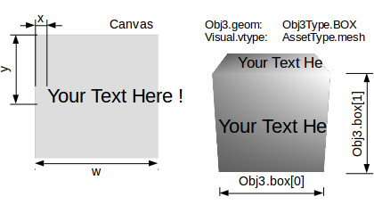

Visual & Renderers¶
X-visual rendering 3d scene with Three.js, wrapped in a rendere, Thrender system. The Thrender handling 2 components, Visual & Obj3, by converting parameters in a Visual to Obj3. The later is represented in scene as an THREE.Object3D object.
- Visual
The Visual Component specify the visual effect such as material texture asset or wireframe type.
- Obj3
The Obj3 Component specify the geometry or shape such as plane, box or path type.
See Obj3.transform
Thrender¶
Thrender is the xv default renderer, handling Visual and Obj3 components. Created by xworld.startUpdate().
Example:
var cube = ecs.createEntity({
id: 'cube0',
Obj3: { geom: Obj3Type.BOX,
box: [200, 120, 80], // bounding box
mesh: undefined }, // Thrender will create this from Visual
Visual:{vtype: AssetType.mesh,
// Three use document to load assets, which doesn't exist while testing.
// 'null' acts as a flag to let thrender create a ram texture.
asset: null },
});
Visual.vtype & Obj3.geom Handling¶
Visual.vtype specify an AssetType;
Obe3.geom specify shape or model type.
When Thrender is created by xworld.startUpdate(), all entities’ Obj3 components will been converted to a scene object, with visual effect of Visual component.
Model geometry and material are good examples to get this idea. Another is the point visual and points object, where point is a visual effect a points array, the scene object consists many points.
Visual.vtype¶
- AssetType.point
The created THREE.Object3D will be rendered as an array of WebGl points.
The point type’s material can only be a THREE.ShaderMaterial.
- AssetType.refPoint
Same as point, except that this type use the asset property specifying entity id of which the vertices’ position is copied from, the entity’s Obj3.mesh.
The refPoint type’s material can only be a THREE.ShaderMaterial.
Visual.paras¶
Visual.paras has different usage for different vtype.
Visual.asset¶
Specify a gltf asset file, e.g. int the test case of html/gltf:
test/html/gitf-city.html/script/Citysys.initCity(),
Visual.asset: 'city/scene.gltf'
The file located in ‘assets/city/scene.gltf’ and referenced bin file together with texture files are loaded by The X-visual Loader of gltf loader.
Dynamic Text¶
AssetType:
xv.AssetType.mesh,
Component:
Dynatex: {
text,
xywh,
dirty: true,
style
}
test:
test/html/dynatex.html
test/html/dynatex-2.html
In x-visual, 2D text are supported by system CanvTex using an html canvas as the dynamic texture, with an API function for updating text.
The Dynatex.style and Dynatex.font are used as canvas style and font attribute, the same as html canvas style, see MDN Canvas.style and css font.
xywh & transform:
Define canvas, font box and transform.
Canvas size, font size and scene objects are working together to produce the 3D visualized effects, while transform declare child alignment - mainly using scale and translate to align text.
Example:
Visual:{vtype: xv.AssetType.mesh},
Dynatex: {
style: '#00c0c0',
font: 'Arial',
xywh: {x: 2, y: 128, w: 256, h: 48, size: 64, margin: 1}
}
Default text is:
font: "bold sans-serif",
xywh: {x: 0, y: 0, size: 32, margin: 0} // w,h must presented
Also note that the font width is measured with html/canvas-2d-context, with height scaled with measured/width. With this scale, the canvas can’t simply been set to size of power 2. So normally browser will warn about this. Before near future, ignoring the message can be the only option.
GLTF Nodes & Transform¶
AssetType:
xv.AssetType.gltf
Visual.paras:
nodes: string | array<string>, nodes name in gltf.
If ignored, will load entire gltf scene.
withTransform: apply node's transformation provided by gltf as node's matrix.
test:
html/gltf-car.html
html/gltf-city.html
html/gltf-verts.html
See also test case about gltf.